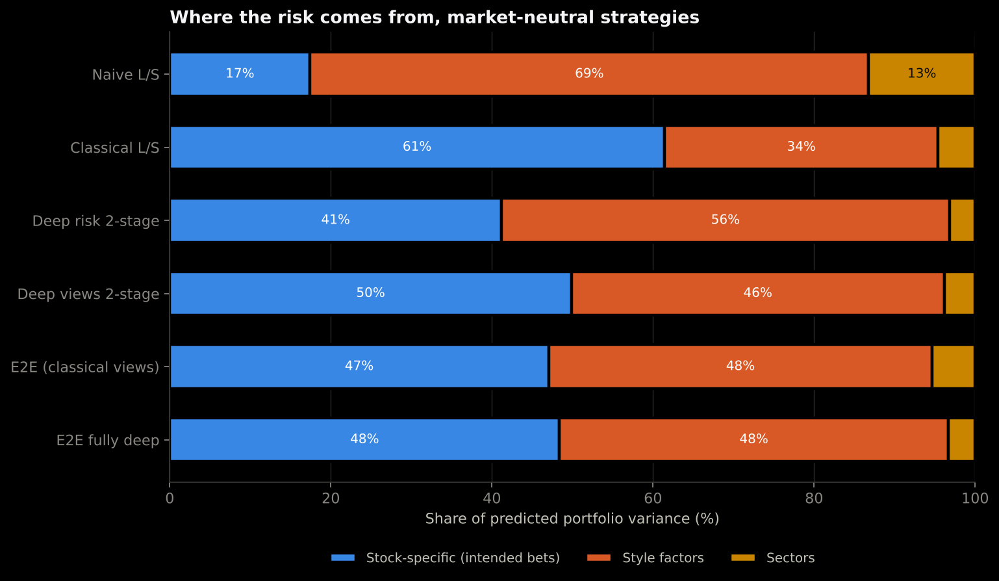
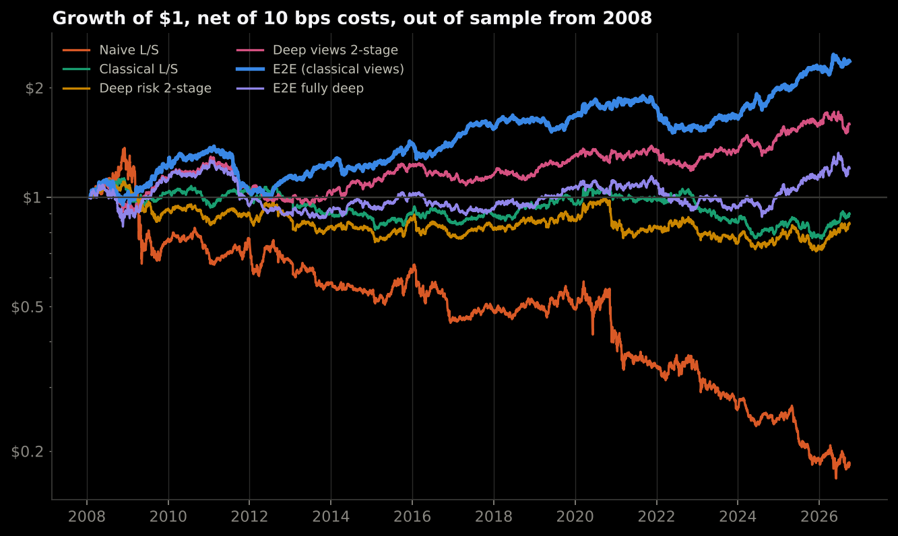
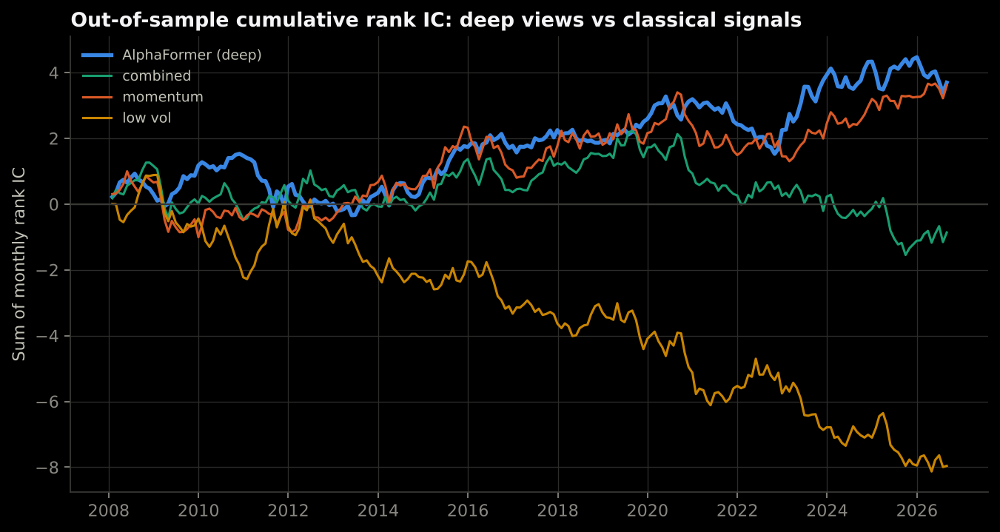
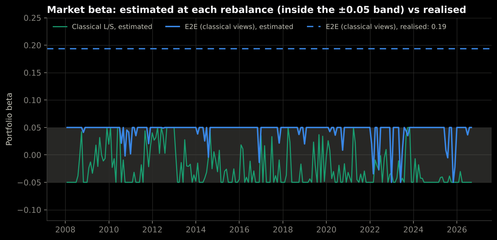

Deep Portfolio Constructor
A long-short portfolio that keeps the intended stock bets and removes unintended sector and factor risk, with PyTorch models for the views, the risk, and the decision itself.
What it provesMaking the optimiser neutral to sectors, beta, size and value raised the share of risk from intended stock bets from 17% to 61%. Training through the optimiser gave the best net Sharpe, 0.58 against −0.03 for the classical optimiser; the gap is not statistically significant, and adding the deep return model on top did not help.
A market-neutral long-short equity portfolio built as a five-step ablation, with PyTorch at every layer: a transformer return model (AlphaFormer), a transformer covariance model, and end-to-end training through a differentiable constrained optimiser (cvxpylayers). Walk-forward from January 2008, net of 10 bps costs, 99 US and Canadian large caps.
Stack Python, PyTorch, cvxpylayers, cvxpy, pandas, statsmodels, scikit-learn, pytest, Streamlit

Objective
A long-short book should be paid for the stock views it intends to hold, not for accidental bets on the market, a sector, or a style factor.
Trade a signal naively and it often carries a factor in disguise: a low-volatility score is mostly a short-beta bet. Here the same three textbook signals (12-1 momentum, one-month reversal, low volatility) are traded six ways on 99 US and Canadian large caps, and an independent risk model measures how much of each portfolio's risk comes from the stock bets themselves.
The pension-fund question behind it: does deep learning help build such a book, or does it just find new ways to take risk nobody asked for?
The deep stack
Deep learning at every layer of the portfolio, all in PyTorch, added one layer at a time so each one's contribution can be measured.
- Views: AlphaFormer. Each stock's last 12 monthly returns are tokens for a transformer; a second transformer attends across stocks, so forecasts are relative and peer-aware. Trained on the negative information coefficient, a three-seed ensemble, 28,033 parameters per member.
- Risk: a transformer covariance model. Weekly patches of each stock's last 60 days plus six factor returns, then attention across stocks. The output is a factor covariance, D(BB ᵀ + Ψ)D, positive definite by construction. Trained on Gaussian likelihood, 29,033 parameters.
- Decision: a differentiable optimiser. The portfolio is the solution of one convex problem (dollar-, sector-, beta-, size- and value-neutral, 5% position caps, a turnover limit), embedded as a cvxpylayers layer. Gradients of the realised result flow back through the optimiser into both networks.
- Trained on the outcome. The end-to-end loss is next month's realised return, minus trading costs, minus a penalty on realised variance. The return model starts from the classical answer (a zero-initialised residual), so it moves only where that helped on validation.
- Walk-forward. Every model refits once a year on past data only, from January 2008. A month is a training example only if its outcome was known at the refit date, and the code asserts it.
Flight data
Portfolio construction removed the unintended risk; training through the optimiser gave the best Sharpe, and the edge is not statistically significant.
Neutralising sectors, beta, size and value raised the share of risk from intended stock bets from the naive portfolio to the optimised one: 17% → 61%. Then the ablation, one deep component at a time, net Sharpe: classical optimiser −0.03; with the deep risk model −0.05; with deep views as well 0.33; trained end to end through the optimiser 0.58; fully deep, adding the AlphaFormer to end-to-end training, 0.15. The end-to-end model's edge over the classical optimiser is +0.43% per month with a Newey-West t of 1.70: not significant at 5%.

Deep views
AlphaFormer turned a useless signal composite into a modestly positive one.
Out of sample, the classical composite's rank IC was −0.0039. AlphaFormer's was 0.0165 (Newey-West t 1.25): level with momentum alone (0.0161), not better. Where it differs is the extremes: its top-minus-bottom quintile spread was +0.47% per month, about double momentum's +0.24%. Positive and still not significant: an honest small edge, not a discovery.

Deep risk
The deep covariance model forecasts risk better, but does not hedge better.
Its out-of-sample Gaussian likelihood beats Ledoit-Wolf shrinkage (−2.941 vs −2.899, lower is better), but the minimum-variance portfolio it builds is more volatile (14.0% vs 13.3%). Likelihood rewards getting each stock's risk level right; hedging depends on small, persistent co-movements that an 8-factor model compresses away. A better forecast is not the same as a better decision, which is the argument for training end to end.
The leak
End-to-end learning optimises realised profit, so it also learned to take market risk the constraints were meant to remove.
The optimiser holds the estimated market beta within ±0.05, and the end-to-end models learned to sit at the top of that band. Betas of volatile stocks are measured with error, so the end-to-end model's realised beta was 0.19. Hedging its own trailing beta, estimated from past returns only, takes its Sharpe from 0.64 to 0.40 on the same window, with an FF6 alpha t of 1.48 before the hedge. Part of the edge was market exposure.

More deep learning, not better
Adding the deep return model to end-to-end training made the portfolio worse, not better.
The fully deep model trains the AlphaFormer, the risk model and the optimiser together. It scored a net Sharpe of 0.15 (one seed), with an FF6 alpha t of 0.04 and a realised beta of 0.17: what return it has is market exposure. The likely reason is sample size. Each yearly refit has at most about 250 monthly decisions to learn from, and the fully deep model has the most parameters to fit to them; it learned to lean ever harder on the AlphaFormer's score. The same AlphaFormer helped as a plain input (the two-stage model, 0.33).
Robustness
- Seeds. Net Sharpe of the end-to-end model across three seeds: 0.58 / 0.46 / 0.49. The headline seed is the best of the three.
- Costs. The same trades re-priced: end-to-end Sharpe 0.45 at 20 bps and 0.19 at 40 bps.
- Constraints. Position caps from 3% to 10% and sector limits from 2.5% to 10%: Sharpe 0.54 to 0.67, using the trained forecasts.
- Model size. The deep risk model at 8K, 29K and 109K parameters always beats Ledoit-Wolf on likelihood and always loses to it on minimum-variance volatility.
- Reproducible. Retraining the deep risk model from scratch reproduces the main run digit for digit.
Limits
The universe is today's large caps: no point-in-time index membership was available, so long-only results carry survivorship bias and the low-volatility signal is penalised. Sector labels are current, not point-in-time.
Size and value exposure are rolling betas to the Fama-French factors, not fundamental characteristics; estimation error in those betas is how market risk leaked through.
No deep model's improvement is statistically significant, and six market-neutral variants were compared, so a multiple-testing haircut applies. Execution is simplified: monthly close, a flat 10 bps, no borrow costs.
Checks
89 automated tests, including: gradients through the optimiser layer checked against finite differences; the deep models' permutation equivariance across stocks; walk-forward label dates asserted; and truncation invariance, where scrambling every return after a date must leave every earlier decision unchanged. As calibration, a deliberately cheating strategy that trades on next month's returns scores a Sharpe of 10.6.
A first-principles notebook rebuilds the ideas in a few lines of PyTorch: the neutrality projection, an optimiser differentiated with autograd, and a model learning the right signal from portfolio returns alone. A Streamlit dashboard shows current weights, the risk split and exposures against their limits.
Figures on this page are read from data/projects.json, copied from the project's committed reports/site_figures.json.